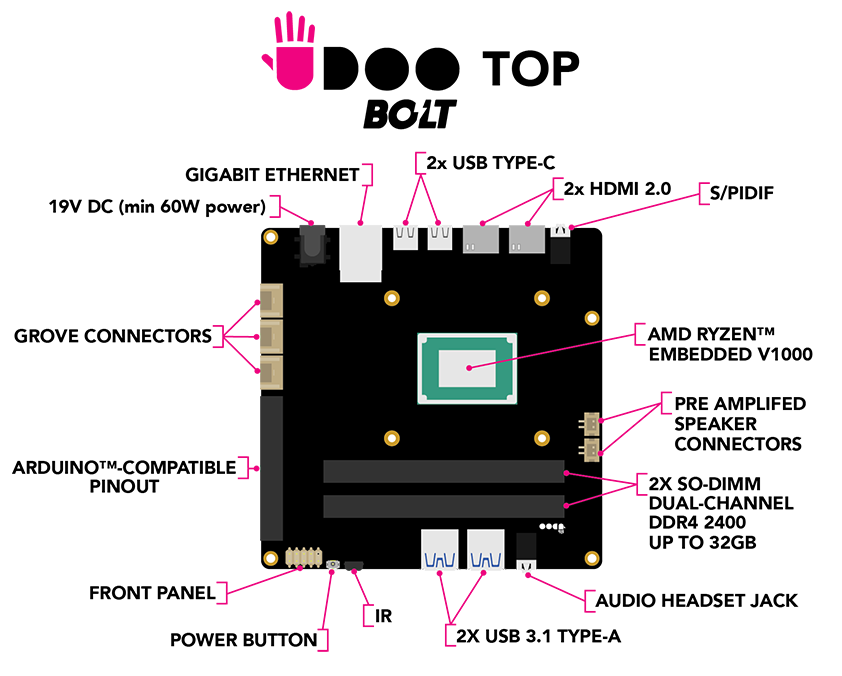
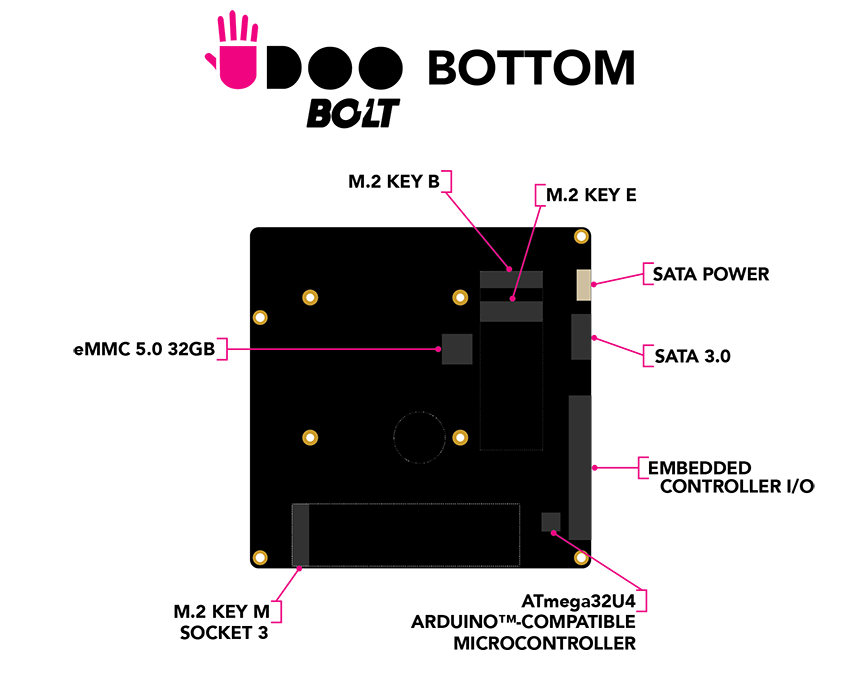

Overview
TOP AND BOTTOM VIEWS

BLOCK DIAGRAM
FULL SPECS AMD RYZEN™ EMBEDDED V1000 SOC
| Processor | AMD Ryzen™ Embedded V1000 (V1605B - V1202B) series up to 3.6GHz in Boost mode | |
| Core Core | Up to Quad Core/Eight Thread | |
| Memory | 2x Slot SO-DIMM Dual-channel 64-bit DDR4 2400 MT/s with ECC support up to 32GB | |
| Graphics | Up to AMD Radeon™ Vega 8 Graphics (8 GPU CU) | |
| Multimedia | DirectX® 12 Technology, OpenCL, OpenGL, The Vulkan® API H.265 Decode & (8-bit) Encode, VP9 Decode |
|
| Video Interfaces | 2x HDMI 1.4 / 2.0a 2x DP Alternate Mode on USB Type-C |
|
| Mass Storage | eMMC 5.0 High Speed Drive 32 GB soldered on board SATA III 6Gbit/s standard connector SSD SATA module's Slot M.2 Socket 2 Key B 2260 (featured also PCI-e x2) NVMe modules Slot M.2 Socket 3 Key M 2280 (PCI-e x4 Gen 3 interface) |
|
| Networking | Gigabit Ethernet Realtek RTL8111G Slot M.2 Socket 1 Key E 2230 for optional WiFi/BT combo |
|
| USB | 2x USB 3 Type-A 2x USB Type-C: - USB 3.1 - DisplayPort Alternate Mode - Dual Role Port (DRP) USB Power Delivery (USB-PD) 3.0 |
|
| Audio | HD Audio Codec Realtek ALC888S Microphone + Headphone Combo Connector (TRRS) Pre-amplified stereo Speaker Connectors (up to 3W) Digital Optical audio S/PDIF and analog stereo output combo jack 3.5mm connector |
|
| Other Interfaces | Front Panel Headers, IR receiver (RC5 compatible), Fan controller, RTC battery included | |
| Embedded Controller I/O Pins | 2x UART, 2x I2C, 1x SPI, 1x Keyboard Scan, 1x FAN Controller, 10x GPIO | |
| Operating System | Windows 10 64bit Any Linux Distribution for x86_64bit |
|
| Board Dimensions | 12cm x 12cm - 4.72” x 4.72” - Nano-ITX standard form factor |
ATMEL® ATMEGA32U4 MICROCONTROLLER
| Microcontroller | Atmel® ATmega32U4 module | |
| Other Interfaces | SPI Flash JTAG connector | |
| Arduino Pinout | Easy to use with a custom 2 rows pinout Expandable with I/O shield to have the standard Arduino Pinour R3 |
|
| Digital I/O Pins | up to 23x digital input/output (7 PWM) | |
| Analog I/O Pins | 12 (10 Bits of resolution) |
Heads up! The communication between the AMD Ryzen™ Embedded V1000 SOC and the Microchip ATmega32U4 module comes through a USB interface, exactly like an Arduino™ Leonardo board connects to an external PC.